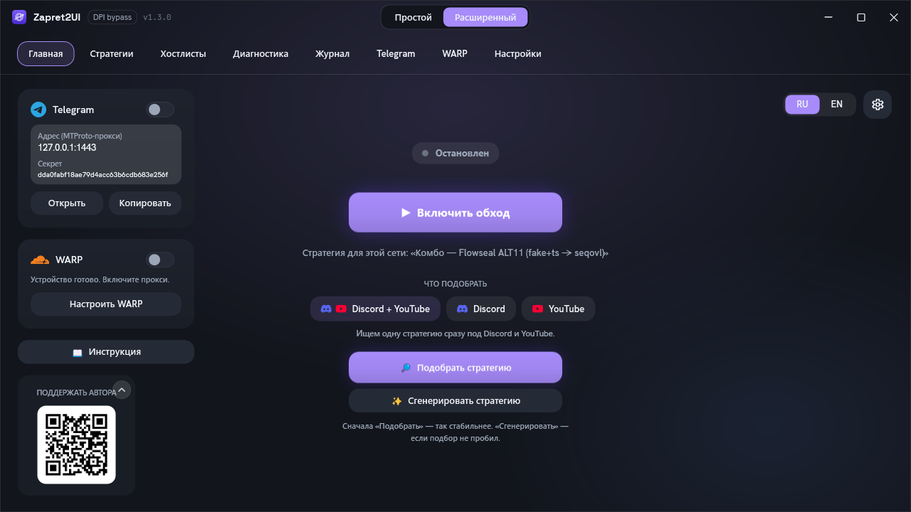
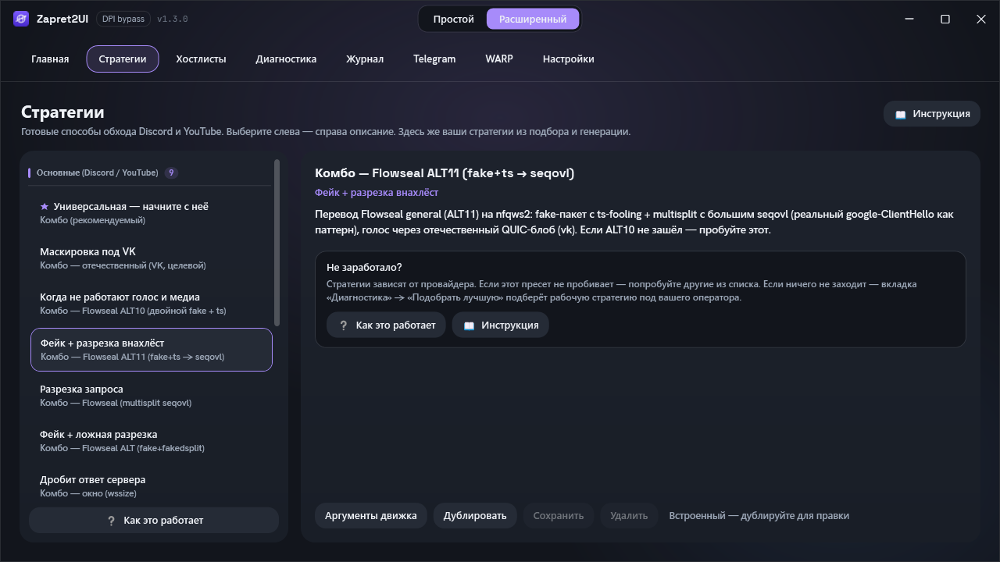
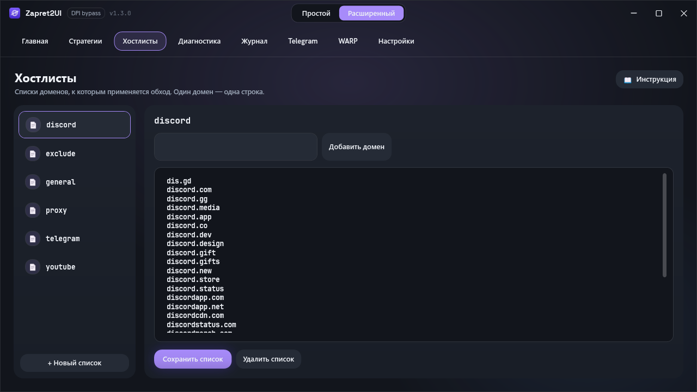
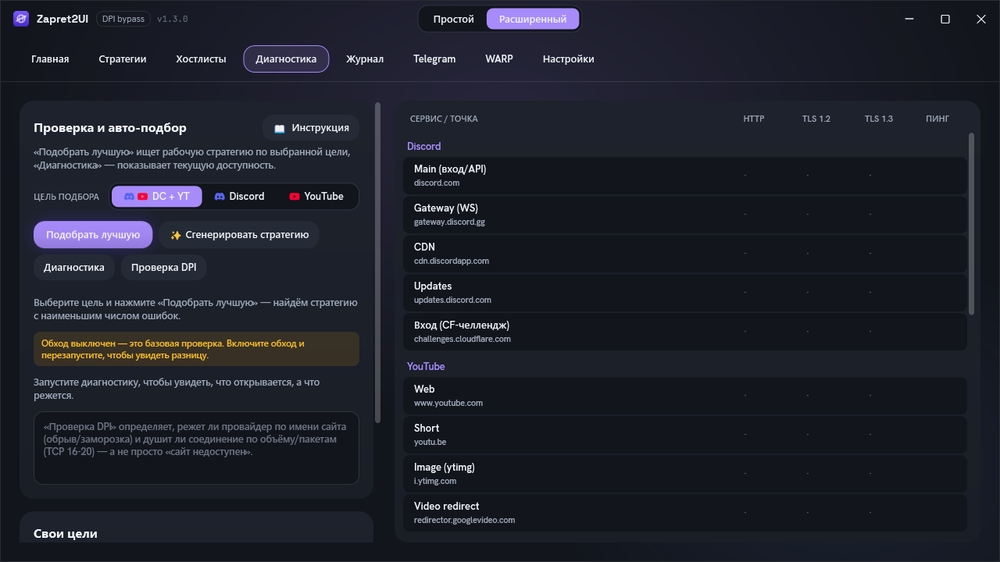
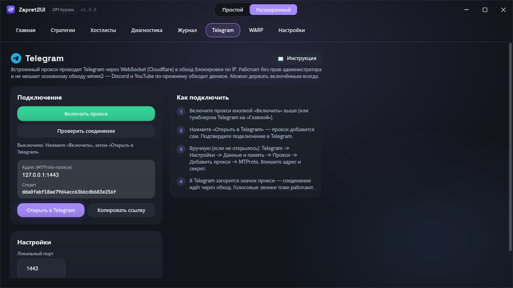
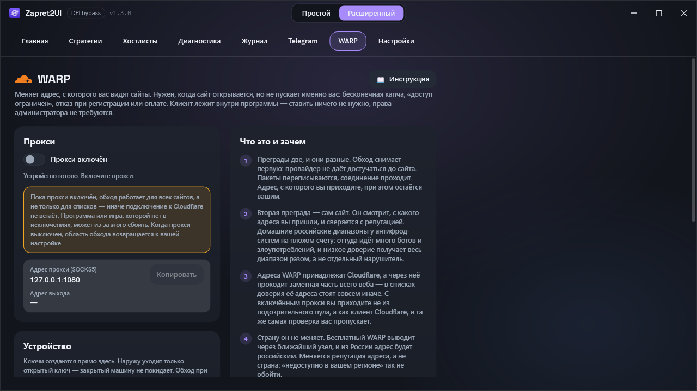
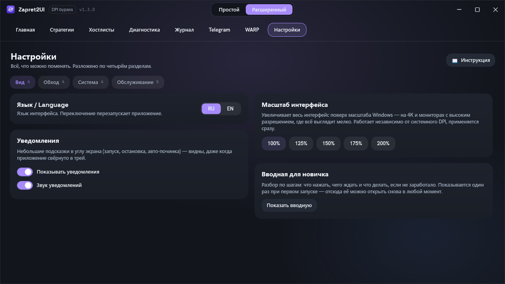

Программа
Интерфейс
Восемь вкладок расширенного режима: что делает каждая кнопка, что означают цвета и куда смотреть, когда что-то пошло не так.
Вверху по центру окна переключатель Простой / Расширенный. Простой режим оставляет одну кнопку включения, карточки Telegram и WARP и выбор цели. Расширенный добавляет вкладки: Главная, Стратегии, Хостлисты, Диагностика, Журнал, Telegram, WARP, Настройки.
Главная

- Кнопка включения обхода. Старт и остановка движка. Над ней точка и подпись состояния: Остановлен, затем Запуск, затем Работает.
- Цель обхода.
Discord + YouTube,DiscordилиYouTube: что именно программа старается открыть при подборе и генерации. Чем уже цель, тем точнее результат. - Подобрать стратегию. Перебирает проверенные готовые стратегии и оставляет ту, что открывает выбранные цели. Начинать стоит с неё: идёт по готовому списку и потому предсказуемее.
- Сгенерировать стратегию. Собирает вариант с нуля, отдельно под Discord и под YouTube. Дольше, нужна тогда, когда подбор не пробил.
- Карточка Telegram. Адрес и секрет встроенного прокси, кнопки «Открыть» и «Копировать», плюс тумблер включения.
- Стратегия для этой сети. Строка появляется, когда для текущей сети уже запомнен рабочий вариант.
Стратегии

Выберите строку и нажмите «Применить»: обход перезапустится на выбранной стратегии. Наведите курсор на строку, чтобы увидеть полное имя и описание во всплывающей подсказке.
Сюда же попадают ваши стратегии, сохранённые после подбора или генерации. Встроенные редактировать нельзя, но любую можно продублировать и править копию. Что именно делает каждая встроенная стратегия, разобрано построчно на странице Разбор стратегий.
Хостлисты

Хостлисты определяют, к каким доменам применяется обход. Это ключевая вещь для режима «только списки», который включён по умолчанию: чего нет в списках, того движок не трогает.
Формат файла
Обычный текстовый файл, по одному домену на строку, без протокола, без косых черт и без звёздочек. Именно так его читает движок, никакого своего формата программа не придумывает.
discord.com
discord.gg
discordapp.com
discordapp.net
gateway.discord.ggДомен покрывает и свои поддомены: строка discord.com сработает и для
canary.discord.com. Поэтому перечислять поддомены отдельно нужно редко.
Какие списки есть
| Файл | Для чего |
|---|---|
discord.txt |
Домены Discord: вход, gateway, CDN, медиа. Встроенный, обновляется при каждом запуске. |
youtube.txt |
Домены YouTube и связанных сервисов Google. Тоже встроенный и обновляемый. |
exclude.txt |
Список исключений: банки, госуслуги и подобное. Работает наоборот, защищая эти домены от профилей, которые ловят весь остальной трафик. |
tgproxy-fronts.txt |
Домены за Cloudflare, через которые ходит встроенный прокси Telegram. Нужен, когда включена настройка «Прикрывать прокси Telegram». |
warp-api.txt |
Служебный домен Cloudflare WARP. Через него идёт регистрация устройства на вкладке WARP, и это имя режется по SNI, поэтому движок прикрывает его всегда — независимо от области обхода. Без этого «Создать устройство» работало бы только в режиме «весь трафик». |
| Ваши файлы | Любой созданный вами список. Программа их не трогает при обновлении. |
Встроенные списки обновляются автоматически при каждом запуске, поэтому дописывать свои домены прямо в них не стоит: правки могут быть перезаписаны. Для своих доменов заведите отдельный список или пользуйтесь кнопкой «Свои цели».
Как список попадает в стратегию
Списки не прописываются в стратегию путями. Вместо этого используются токены, которые разворачиваются при запуске.
| Токен в стратегии | Что подставится |
|---|---|
{HOSTLIST} |
Активный список, тот, что выбран на этой вкладке. Если активного нет, токен просто исчезает из команды. |
{HOSTLIST:discord} |
Конкретный список по имени файла. Так устроены все встроенные стратегии: они одновременно обращаются и к списку Discord, и к списку YouTube, направляя их в разные приёмы. |
{EXCLUDE:exclude} |
Список исключений для профилей, ловящих всё подряд. |
Полный перечень токенов: Справочник.
Свои цели
Быстрый способ добавить домен, не разбираясь со списками. Кнопка живёт на вкладке Диагностика. Добавленный домен:
- попадает в отдельный сводный список целей;
- начинает проверяться в диагностике наравне с Discord и YouTube;
- участвует в подборе и генерации, то есть стратегия ищется в том числе под него;
- обходится даже в режиме «только списки».
При добавлении программа сама учитывает поддомены и тот же бренд в других зонах: например,
yandex.ru подтянет заодно ya.ru и yandex.kz.
Обход по IP-адресам
Списки доменов работают, пока блокировка идёт по имени. Если сервис режут по адресам, имя в пакете менять бессмысленно. На этот случай есть ipset: список подсетей вместо списка доменов.
Кнопка «Собрать IP-список Discord» резолвит домены Discord и складывает актуальные подсети
в lists\ipset-discord.txt. Прав администратора не нужно, задействован только DNS. В
стратегии список подключается токеном {IPSET} или {IPSET:имя}.
Полностью блокировку по IP это не снимает: движок по-прежнему не может провести трафик туда, куда закрыт маршрут. Ipset помогает в промежуточном случае, когда фильтрация идёт по адресам, но сами адреса доступны. Если же соединение не устанавливается вообще, нужен VPN, а для Telegram встроенный прокси.
Диагностика

Слева кнопки, справа таблица. Строки собраны по сервисам: Discord (вход и API, gateway, CDN, обновления, проверка Cloudflare), YouTube (сайт, короткие ссылки, картинки, видео), а также Google, Cloudflare и DNS. Столбцы: HTTP, TLS 1.2, TLS 1.3 и Ping.
| Кнопка | Что делает |
|---|---|
| Подобрать | Перебирает готовые стратегии, проверяет доступность и оставляет лучшую. |
| Сгенерировать | Собирает личную стратегию под вашу сеть. Дольше, но точнее. |
| Диагностика | Просто проверить, что открывается. Ничего не меняет и не запускает движок. |
| Проверка DPI | Определяет, режет ли провайдер именно по DPI. Разобрано ниже. |
| Свои цели | Добавить домен, чтобы его тоже проверяли и обходили. |
Зелёное не всегда означает «работает». Диагностика проверяет доступность на низком уровне. Сайт может резаться другим способом, например через ECH или по IP-адресу, и тогда проверка проходит, а страница не открывается. Разбор этого случая: Если не работает.
Как работает «Проверка DPI»
Обычная диагностика отвечает на вопрос «открывается или нет». Проверка DPI отвечает на другой: вмешивается ли провайдер. Для каждого чувствительного хоста делается два шага.
-
Подключение к порту 443
Если обычное TCP-подключение не проходит, это не блокировка по имени сайта, а недоступность: проблема с маршрутом или блокировка по IP. Так и пишется, «нет соединения».
-
Отправка настоящего имени сайта
Если подключение прошло, сервер жив. Тогда отправляется TLS ClientHello с реальным SNI, и смотрится, что происходит именно с этим пакетом:
- Обрыв сразу после ClientHello. Сервер уже согласился на соединение, значит сброс на пакете с именем сайта пришёл не от него, а от оборудования посередине.
- Заморозка. Пакет ушёл, ответа нет, соединение висит. Пакет с именем тихо выброшен.
- Рукопожатие прошло. Признаков вмешательства нет.
Точнее всего запускать проверку с выключенным обходом: тогда видно неприкрытое поведение провайдера. При включённом обходе результат «чисто» означает лишь, что обход уже сделал свою работу.
Отдельно проверяется лимит по объёму. Кроме блокировки по имени провайдер может душить само соединение по количеству пакетов: первые десятки килобайт проходят, дальше поток замирает. Короткое рукопожатие под такой лимит не попадает и показывается как «чисто», поэтому программа отдельно тянет крупную загрузку и смотрит, проходит ли она за порог. Идея метода взята из проекта hyperion-cs/dpi-checkers.
Журнал
Первое место, куда смотреть, если обход не запустился. Причина почти всегда здесь: ошибка запуска, проблема с драйвером, вмешательство антивируса, код выхода движка.
Вкладка разделена на две части, чтобы проблема прокси не терялась среди вывода движка.
| Часть | Что показывает |
|---|---|
| Движок | Живой вывод winws2: запуск, подключение драйвера, применённая стратегия,
ошибки и код выхода. |
| Telegram | Вывод встроенного прокси: запуск слушателя, выбор пути к дата-центрам, переход на домены за Cloudflare, ошибки соединения. |
У каждой части свои кнопки «Копировать» и «Очистить».
Переключатель --debug в заголовке включает подробный режим сразу для обеих
частей. Движок начинает писать, к каким именно соединениям применились приёмы и почему: без этого
понять, что стратегия молча не сработала, практически невозможно. Прокси добавляет по три строки
на соединение:
[tg-proxy] #7 DC2: открыто через прямой IP
[tg-proxy] #7 DC2: трафик пошёл
[tg-proxy] #7 DC2: закрыто через 45,2 с — Telegram закрыл каналЧитайте эти строки по номеру #N, а не подряд. Telegram Desktop держит
несколько соединений одновременно и при любой смене сети переоткрывает их разом, поэтому строки
закрытия старых соединений идут вперемешку со строками открытия новых. Без номера соседняя пара
выглядит так, будто только что открытое соединение прожило 45 секунд, — на деле это два разных
соединения.
В обычном режиме прокси пишет только то, на что можно реагировать: запуск, первый успешно открытый канал, исключённый фронт, неудачу подключения.
Движок читает этот флаг только при запуске, поэтому переключение перезапускает обход: соединение на секунду прервётся. Выбор запоминается между сеансами, так что не забудьте выключить подробный режим, когда закончите разбираться. Журнал хранит последние 3000 строк, и в подробном режиме обычные сообщения о запуске улетают вверх заметно быстрее.
Что искать в выводе
| Строка примерно такая | Что означает |
|---|---|
| Про инициализацию windivert и начало захвата | Драйвер поднялся, движок работает. Если этой строки нет, до обхода дело не дошло. |
| Про включение TCP timestamps | Программа перевела системную настройку в рабочее состояние на время сеанса и вернёт её при
остановке. Это нужно стратегиям с tcp_ts. |
| Упоминание кода выхода | Движок остановился. Смотрите строку над кодом: она и содержит причину. Расшифровка: Если не работает. |
| Сообщение о несуществующей функции desync | В стратегии указан глагол, которого нет в движке. Обычно это перенос конфига из чужой сборки. Сверьтесь со списком глаголов. |
Всё то же самое дублируется в файлы в папке logs\, по файлу на сеанс. Если просите
помощи в канале или в задаче на GitHub, приложите последние десять или пятнадцать строк: по ним
почти всегда видно, что пошло не так.
Telegram

Telegram блокируют не так, как сайты: чаще по IP-адресам. Обход DPI против этого бессилен, поэтому в программе есть отдельный встроенный прокси.
- Что делает. Поднимает локальный MTProto-прокси на
127.0.0.1:1443и уводит каждое соединение к дата-центрам Telegram по WebSocket поверх TLS. Когда прямой путь закрыт, идёт через домены за Cloudflare. Так связь переживает блокировку по адресам. - Права. Администратор не нужен: это локальный слушатель и исходящее TLS-соединение. Работает, даже когда окно свёрнуто в трей.
- Порт и секрет. По умолчанию порт
1443, если занят, берётся ближайший свободный. Секрет из 32 шестнадцатеричных символов сохраняется, чтобы ссылка не менялась между запусками. - Как подключить. Кнопка «Открыть в Telegram» пропишет всё сама. Вручную: Настройки, Данные и память, Прокси, Добавить, MTProto, вписать адрес, порт и секрет.
- Только обычный Telegram. У клиента есть режим тестовой сети — отдельная инфраструктура Telegram для разработчиков. Прокси ведёт только к обычным дата-центрам, поэтому такое соединение он распознаёт и отклоняет со строкой в журнале. Иначе оно молча ушло бы в обычный дата-центр и висело бы вечным «подключением» без объяснения причины.
Чем это отличается от tg-ws-proxy
Механизм тот же, что у tg-ws-proxy, но реализация другая. Оригинал: отдельная программа на Python, собранная в самостоятельный исполняемый файл. Здесь: нативный порт протокола на C#, встроенный прямо в приложение, без второго процесса и без Python-рантайма.
Реализован транспорт dd (обфусцированный MTProto). Клиент подключается по локальной
петле, поэтому FakeTLS не нужен и опущен. Рабочий путь сохранён: резолв через DoH и домены за
Cloudflare, с пулом фронтов и временным отсевом неудачных.
Отличие по существу — переписка и медиа идут разными путями. Telegram открывает соединения для файлов отдельно от переписки и сразу несколько параллельно. В оригинале и то и другое уходит одной дорогой, упираясь в один узел: получается знакомая картина, когда сообщения приходят мгновенно, а фото и видео не открываются.
Здесь путь выбирает полоса. Переписка идёт по прямому узлу Telegram: он открывается быстро и без посредника, а сообщения маленькие. Медиа предпочитает домены за Cloudflare, чьи адреса возят объём на полной скорости, и параллельные загрузки расходятся по разным узлам — у каждой полосы свой предпочитаемый узел и свой список временно недоступных. Каждый путь при этом страхует второй, и часть попыток резервируется под это заранее.
Так сделано потому, что прямая дорога ведёт на собственные адреса Telegram — те самые, которым чаще ограничивают скорость, а не блокируют совсем. Рукопожатию ограничение не мешает, поэтому соединение открывается как ни в чём не бывало: переписка летает, а загрузка на том же пути еле ползёт.
Второе отличие — крупные сообщения собираются обратно. Канал вправе разрезать одно сообщение на несколько кадров, и разрезаются только большие, то есть файлы, но не переписка. Потерянное продолжение рассинхронизирует шифр-поток навсегда: клиент с этого места читает мусор и рвёт соединение, а выглядит это как «медиа то грузится, то нет».
Третье — в журнале видно объём и скорость. При включённом подробном журнале каждое соединение закрывается строкой с полосой, путём, объёмом в обе стороны и средней скоростью. Соединение, которое открылось, протащило пару килобайт и умерло, больше не выглядит здоровым.
Проверено пробой: у фронтов нет отдельного медиа-эджа — имя вида
kws2-1.<домен> не резолвится ни на одном из них. Telegram определяет медиа по
отрицательному номеру дата-центра в relay init, а не по имени хоста. Поэтому обе полосы
физически используют одно и то же имя, и разнести их можно только на стороне выбора узла.
WARP

Обход и WARP решают разные задачи. Обход проводит соединение сквозь блокировку — когда сайт не открывается вообще. WARP подменяет адрес, с которого вы приходите, — когда сайт открывается, но отказывает лично вам или всей вашей сети.
- Ставить ничего не нужно и права администратора не требуются: клиент лежит внутри программы и запускается обычным дочерним процессом.
- Это прокси, а не туннель. Ни адаптера, ни маршрутов, ни изменений в системе — значит неудача не может оставить вас без интернета. Через него идёт только то, что вы туда направите.
- Ключи создаются на вашем компьютере. Наружу уходит только открытый ключ; почта, пароль и учётная запись не нужны.
- Успех не показывается на веру. Программа спрашивает у Cloudflare через сам прокси, где она вас видит, и только тогда сообщает, что всё работает.
- Гео-блокировки этим не снять. Бесплатный WARP выводит через ближайший узел: из России адрес будет российским и помеченным как WARP.
Подробно о том, что это даёт, чего не даёт, куда вписать адрес прокси и что происходит внутри — отдельная страница «WARP и смена адреса».
Настройки

settings.json.| Настройка | Ключ | По умолчанию | Что делает |
|---|---|---|---|
| Простой режим | SimpleMode | true | Одна кнопка вместо вкладок. |
| Язык интерфейса | Language | ru | Русский или английский. Тумблер RU | EN на Главной и в Настройках. Применяется после перезапуска программы. |
| Активная стратегия | ActivePresetName | Имя выбранной стратегии. | |
| Активный хостлист | ActiveHostlist | Имя активного списка доменов. | |
| Авто-обновление движка | AutoUpdateEngine | true | Тихо обновлять winws2 из релизов. |
| Автозапуск с Windows | Autostart | false | Запуск при входе, от администратора, через планировщик задач. |
| И запуск обхода | AutostartEngine | false | Дополнительно включать обход при старте. |
| Сворачивать в трей | MinimizeToTray | true | Крестик прячет окно, а не закрывает программу. |
| Стартовать в трее | StartMinimized | false | Запускаться сразу свёрнутым. |
| Авто-починка | AutoHeal | false | Следить за доступностью и переподбирать при сбое. |
| Игровой фильтр | GameFilter | false | Расширить перехват на все высокие порты. |
| Обход всех сайтов | BypassAllSites | false | Все сайты вместо только списков. Пока включён прокси WARP, обход идёт по всем сайтам независимо от этого значения — сама настройка не меняется. |
| Отключить QUIC | DisableQuic | false | Дропать QUIC, чтобы браузер откатился на TCP. |
| Прикрывать прокси Telegram | TgProxyCoverage | false | Движок дополнительно прикрывает соединения прокси. Для мобильного DPI. |
| Подробный лог | DebugLog | false | Чип --debug на вкладке Журнал. Движок пишет, к каким соединениям применились приёмы. Включение перезапускает обход. |
| Масштаб интерфейса | UiScale | 1.0 | Дополнительный зум поверх системного DPI. Кнопки дают 100–200 %; вписанное в файл значение принимается до 2.5. |
| Уведомления | NotificationsEnabled | true | Показывать всплывающие сообщения в углу экрана. |
| Звук уведомлений | NotificationSound | true | Тихий сигнал вместе с сообщением. |
| Порт прокси Telegram | TgProxyPort | 1443 | Локальный порт встроенного прокси. |
| Секрет прокси | TgProxySecret | Постоянный секрет MTProto. | |
| Автозапуск прокси | TgProxyAutostart | false | Стартовать прокси вместе с программой. |
| Весь трафик через WARP | MasqueSystemProxy | false | Прописывать прокси в настройках Windows, пока WARP включён. Firefox не покрывается — у него своя настройка. |
| Порт прокси WARP | MasqueListenPort | 1080 | Локальный порт SOCKS5-прокси WARP. |
| Транспорт WARP | MasqueHttp2, MasqueConnectPort | true, 443 | Способ подключения, который сработал в прошлый раз. Подбирается сам. |
| Память по сетям | NetworkStrategies | {} | Соответствие «сеть, стратегия». Только локально. |
Кроме перечисленного файл хранит две служебные отметки интерфейса: свёрнут ли блок поддержки автора и показана ли вводная при первом запуске. Руками их не трогают.
Отдельная кнопка «Добавить в исключения» одним нажатием прописывает программу и папку движка в Защитник Windows и брандмауэр. Антивирус остаётся самой частой причиной, по которой обход «не работает».
После каждого исключения программа перечитывает список у Защитника и проверяет, что запись
действительно появилась. При включённой «Защите от подделки» (Tamper Protection — по
умолчанию включена в Windows 11) или под сторонним антивирусом команда добавления умеет
отчитаться об успехе, а исключение при этом тихо отбрасывается. Поэтому в отчёте будет честный
✗ с причиной, а не галочка. Тогда добавьте папку %LOCALAPPDATA%\Zapret2UI
вручную: «Безопасность Windows» → «Защита от вирусов и угроз» → «Исключения».
Резервная копия, сброс и логи
Раздел «Обслуживание» в «Настройках» — разовые действия: то, что запускают время от времени, а не переключают.
Резервная копия. Кнопки «Сохранить в файл» и «Восстановить из файла». В один файл
.z2bak складываются настройки, ваши стратегии и папка списков. Движок туда
не попадает: он весит больше сотни мегабайт и всё равно скачивается сам. Пригодится при
переустановке Windows, переносе на другой компьютер и как страховка перед сбросом.
Восстановление заменяет текущие настройки, стратегии и списки содержимым файла, после чего
программа перезапускается — иначе она сохранила бы поверх старые значения, которые ещё держит
в памяти.
Сброс настроек. Возвращает всё из таблицы выше к значениям по умолчанию: снимает автозапуск вместе с задачей в планировщике, выключает авто-починку, игровой фильтр, QUIC и прикрытие прокси, возвращает масштаб и порт. Запущенные обход и прокси останавливаются.
Сброс не трогает ваши стратегии и хостлисты — они лежат в отдельных файлах. Также намеренно сохраняются язык интерфейса и режим Простой/Расширенный (иначе сброс выдернул бы вас из текущего экрана), текущий выбор стратегии и списка, секрет Telegram-прокси (иначе перестала бы работать уже настроенная в клиенте ссылка) и память по сетям.
Файлы логов. Каждый запуск движка пишет свой файл logs\engine-*.log. Раньше
они копились без ограничений; теперь при старте программы остаются последние 20, остальные
удаляются. Кнопка «Очистить логи» убирает их все сразу. Служебные startup.log и
fatal.log не трогаются — они не растут в количестве и нужны для разбора сбоев.
Область обхода, игровой фильтр и QUIC
Три настройки решают, что именно трогает движок. Они заметно влияют на результат, поэтому стоит понимать разницу.
Игровой фильтр меняет только захват по UDP. Захват по TCP всегда широкий, порт 80 плюс весь диапазон 443 и выше: медиа и вложения Discord живут на высоких портах TCP, и узкий захват молча лишил бы их обхода.
| Настройка | Выключено (по умолчанию) | Включено |
|---|---|---|
| Обход всех сайтов | Обходятся только домены из списков плюс ваши цели. Профили, ловящие «всё остальное», пере-нацеливаются на ваши цели или отбрасываются, поэтому игры и приложения не задеваются. | Обходится весь TLS и QUIC, кроме списка исключений (банки, госуслуги и подобное). Удобно, но может сломать приложение, которого нет в исключениях. Включается само на время работы прокси WARP. |
| Игровой фильтр | По UDP перехватываются только 443 (это QUIC), STUN и голосовой диапазон Discord. Игровой трафик по UDP идёт мимо обхода. | Захват по UDP расширяется на все высокие порты, чтобы обход доставал и до замедляемых игр. |
| Отключить QUIC | QUIC обходится своими профилями, как и TCP. | QUIC у обходимых сервисов дропается, браузер откатывается на TCP. Включать, если провайдер режет именно QUIC: типичный рецепт для «YouTube буферизует». |
Файлы на диске
Программа портативная: не устанавливается в Program Files и почти не трогает систему.
Всё лежит в одной папке.
%LOCALAPPDATA%\Zapret2UI\
├─ engine\ движок и его данные
│ ├─ winws2.exe сам движок, нужен администратор
│ ├─ mdig.exe, ip2net.exe резолв доменов в подсети для ipset
│ ├─ cygwin1.dll, WinDivert* рантайм и сетевой драйвер
│ ├─ installed_version.txt установленная версия движка
│ ├─ lua\ библиотеки приёмов
│ ├─ files\ блобы: готовые TLS и QUIC ClientHello
│ └─ windivert.filter\ части фильтра перехвата
├─ lists\ хостлисты и ipset
│ ├─ youtube.txt, discord.txt встроенные списки доменов
│ ├─ exclude.txt исключения: банки, госуслуги
│ ├─ ipset-discord.txt собранные подсети
│ └─ ipset-masque.txt точки входа WARP, движок покрывает их всегда
├─ logs\ вывод движка по сеансам
├─ masque\ встроенный клиент WARP
│ ├─ usque.exe клиент MASQUE
│ └─ config.json зарегистрированное устройство: ключ, лицензия, токен
├─ tmp\ временные загрузки
├─ presets.json ваши стратегии
└─ settings.json настройкиКак удалить полностью
-
Закройте программу
Правый клик по значку в трее, «Выход». Крестик только сворачивает окно, а не завершает работу.
-
Снимите автозапуск, если включали
Настройки, выключить «Запускать Zapret2UI при входе в Windows». Либо вручную:
schtasks /delete /tn "Zapret2UI Autostart" /f -
Удалите файл и папку данных
Сам
Zapret2UI.exeи папку%LOCALAPPDATA%\Zapret2UI\. После этого от программы не остаётся ничего: в реестре и вProgram Filesона ничего не пишет.
Windows пишет «Файл уже используется» на WinDivert64.sys? Это драйвер ядра,
он остаётся загруженным, пока его не выгрузить. Убедитесь, что программа закрыта через трей и в
Диспетчере задач нет winws2.exe, затем в PowerShell от администратора:
sc.exe stop WinDivert
sc.exe delete WinDivertИменно sc.exe, а не sc: в PowerShell sc это псевдоним
команды Set-Content, поэтому sc stop WinDivert молча не сработает. В
обычной cmd.exe работает и короткий вариант.
Проще всего просто перезагрузить компьютер и удалить папку: драйвер настроен не грузиться сам, после перезагрузки файл свободен.
Если добавляли исключения через настройки, останутся безвредные правила Защитника Windows и
брандмауэра с именем Zapret2UI. При желании их можно убрать в настройках
безопасности Windows.
settings.json пишется атомарно, через временный файл, чтобы сбой при записи не повредил
настройки. Если файл всё же испортился, он сохраняется рядом с расширением .bak, а
настройки сбрасываются на значения по умолчанию.